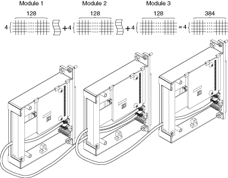
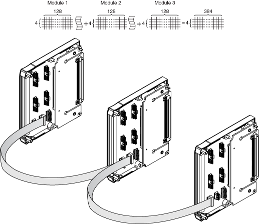

You can expand the matrices of the NI PXI/PXIe-2532/2532B (NI 2532/2532B) by increasing the number of columns in the matrix.
To expand the number of columns, use the terminal block row connection headers to connect the rows on adjacent terminal blocks. The following table lists the available terminal blocks and matrix configurations that support column expansion.
| Terminal Block | Configuration (Row x Column) |
|---|---|
| NI TB-2640/2640B | 1-wire 4×128 |
| NI TB-2641/2641B | 1-wire 8×64 |
| NI TB-2642/2642B | 1-wire 16×32 |
| NI TB-2643/2643B | 1-wire Dual 4×64 |
| NI TB-2643/2643B | 2-wire 4×64 |
| NI TB-2644/2644B | 1-wire Dual 8×32 |
| NI TB-2644/2644B | 2-wire 8×32 |
| NI TB-2645B | 1-wire Dual 16×16 |
| NI TB-2645B | 2-wire 16×16 |
| NI TB-2646B | 1- wire Quad 4×32 |
| NI TB-2646B | 2-wire Dual 4×32 |
|
Note The NI TB-2645 does not support column expansion. |
Most terminal blocks feature row connection headers that enable you to join rows on two adjacent terminal blocks to expand the number of columns in a matrix. These terminal blocks include two row connection header sets with identical pinouts. The NI TB-2646B includes two row connection header sets with differing pinouts. Refer to the NI Switches Help and the NI TB-2646B Installation Instructions for row connection header pinouts.
The column expansion procedure is the same for all of the terminal block modules with two identical row connection headers. This includes the NI TB-2640/2641/2642/2643/2644 and NI TB-2640B/2641B/2642B/2643B/2644B/2645B.
|
Note The NI TB-2645B requires two row ribbon cables for matrix expansion. |
Complete the following steps to expand the number of columns of a matrix using a NI TB-2640/2641/2642/2643/2644.
The following figure illustrates how to use ribbon cables to connect rows on multiple NI TB-2640 modules and expand the number of columns.

The same procedure is used on NI TB-2640/2641/2642/2643/2644 terminal blocks by using the appropriate row ribbon cable header as specified in the following table.
| Terminal Block Module | Row Connection Header 1 | Row Connection Header 2 |
|---|---|---|
| NI TB-2640 | J3 | J4 |
| NI TB-2641 | J2 | J3 |
| NI TB-2642 | J2 | J3 |
| NI TB-2643 | J3 | J4 |
| NI TB-2644 | J2 | J3 |
Complete the following steps to expand the number of columns of a matrix using a NI TB-2640B/2641B/2642B/2643B/2644B/2645B.
The following figure illustrates how to use ribbon cables to connect rows on multiple NI TB-2640B modules and expand the number of columns.

The same procedure is used on NI TB-2640B/2641B/2642B/2643B/2644B/2645B terminal blocks by using the appropriate row ribbon cable header as specified in the following table.
| Terminal Block Module | Row Connection Header 1 | Row Connection Header 2 |
|---|---|---|
| NI TB-2640B | J4 | J5 |
| NI TB-2641B | J4 | J5 |
| NI TB-2642B | J8 | J9 |
| NI TB-2643B | J4 | J5 |
| NI TB-2644B | J4 | J5 |
| NI TB-2645B | Cable 1 - J4 Cable 2 - J6 |
Cable 1 - J5 Cable 2 - J7 |
|
Note For the NI TB-2645B, do not connect a row ribbon cable from a Cable 1 header to a Cable 2 header. |
The NI TB-2646B has a second row connection header with a modified pinout that is not identical to the first row connection header. Column expansion can only be achieved by connecting a row ribbon cable from the row connection header of one terminal block to the same row connection header of an adjacent terminal block. Refer to the NI TB-2646B Installation Instructions for row connection header pinouts.
Complete the following steps to expand the number of columns of a matrix using a NI TB-2646B.
The same procedure is used on NI TB-2646B terminal blocks by using the appropriate row ribbon cable header as specified in the following table.
| Terminal Block Module | Row Connection Header 1 | Row Connection Header 2 |
|---|---|---|
| NI TB-2646B | J4 | J9 |